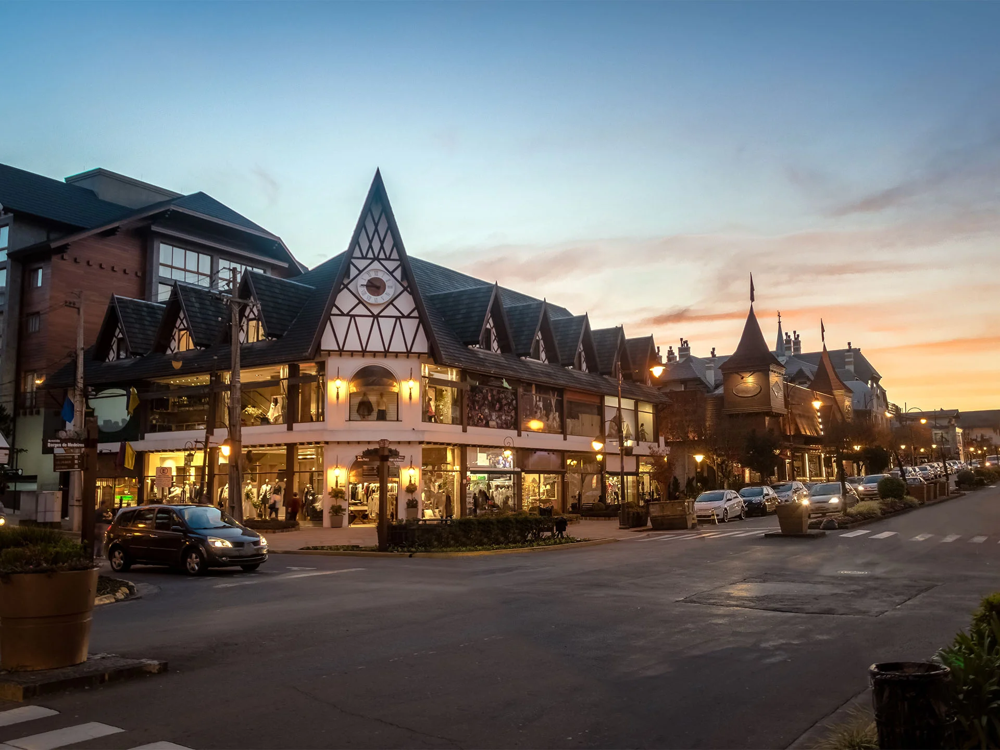
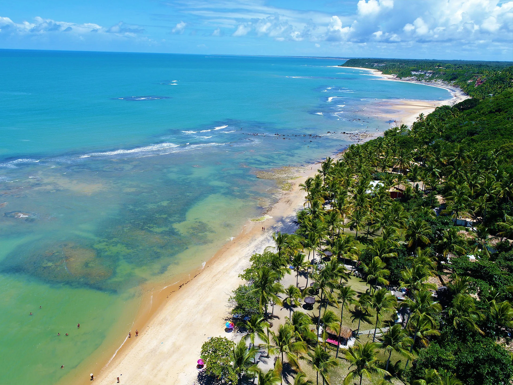

Gramado
Gramado é uma pequena cidade turística, a sudeste de Caxias do Sul e a leste de Nova Petrópolis , no sul do estado brasileiro do Rio Grande do Sul , na região da Serra Gaúcha
Comprar

Porto Seguro
Porto Seguro, é uma cidade localizada no extremo sul da Bahia. A cidade tem uma população estimada de 150.658 e cobre 2.287 quilômetros quadrados.
Comprar